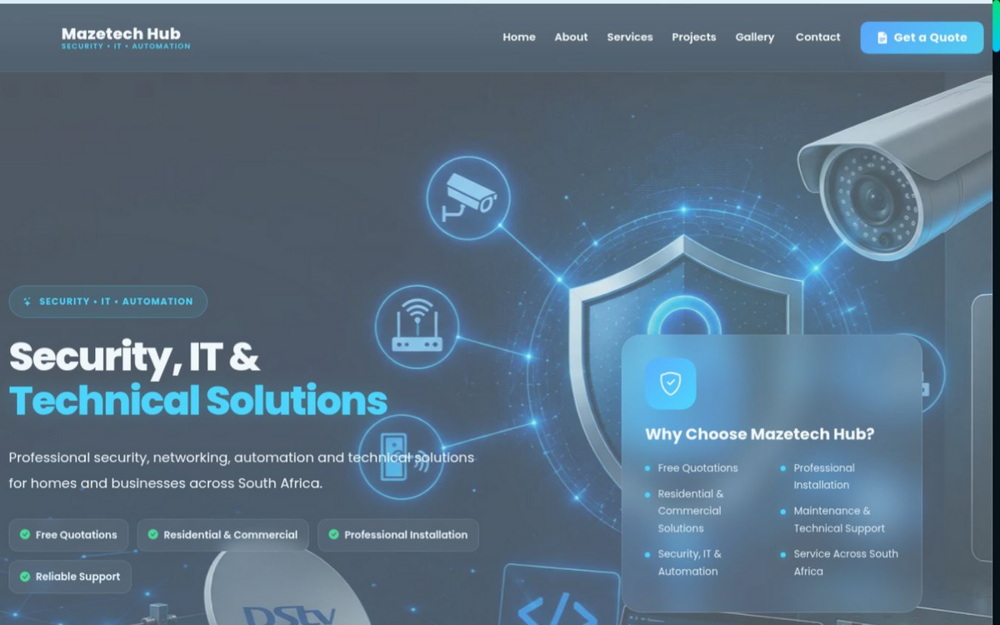

The brief
The client needed a website that presented four distinct service lines (CCTV, access control, intercoms, IT support) without confusing visitors, and made it trivial to request a quote. They had no existing web presence.
A live business website for a security-systems and IT company. Designed, built, deployed and maintained by me. This case study explains the engineering, not just the visuals.

The MazeTech Hub production server is currently offline for maintenance. The site is normally reachable at mazetechhub.co.za. The architecture, decisions and lessons documented on this page reflect the deployed system and are unaffected.
The client needed a website that presented four distinct service lines (CCTV, access control, intercoms, IT support) without confusing visitors, and made it trivial to request a quote. They had no existing web presence.
I split the project into two layers: a static public site and a small Flask application for dynamic pieces (enquiry submission, admin views for the client). This lets the public pages stay fast and cacheable while keeping the admin isolated.
Visitor
|
v
Caddy (reverse proxy, HTTPS, auto-cert)
|
v
Waitress (WSGI server, 4 workers)
|
+---> Static files (HTML, CSS, images)
|
+---> Flask app
|
v
SQLAlchemy
|
v
SQLite (WAL mode)
Why this stack: Caddy handles TLS automatically, which removed an entire class of certificate-expiry outages. Waitress is more stable than Flask dev server for a single-process deployment on a small VPS. SQLite is fine here - the write volume is a handful of enquiries per day, and WAL mode handles the concurrent reads that static assets generate.
Backend source and admin credentials are kept private. This case study is public; the code is not.
Django would have given me the admin for free. I chose Flask anyway because:
Would I make the same call for a 20-table application? No. Django admin would pay for itself there.
Incident 1 - Silent form failures. Enquiries were being accepted with a 200 response but never reaching the database, because SQLite was locked during concurrent writes. Fix: enabled WAL mode and added a retry with backoff around the insert. Now the form returns 500 if it cannot persist, so failures are visible.
Incident 2 - Certificate renewal. The initial deployment used a manual cert renewal script I forgot to schedule. Fix: replaced with Caddy automatic ACME.
The site is live at mazetechhub.co.za. It presents four service lines clearly, captures enquiries reliably, and gives the client a private admin to manage quote requests without technical help. This is the project that taught me more about production reliability than any course.